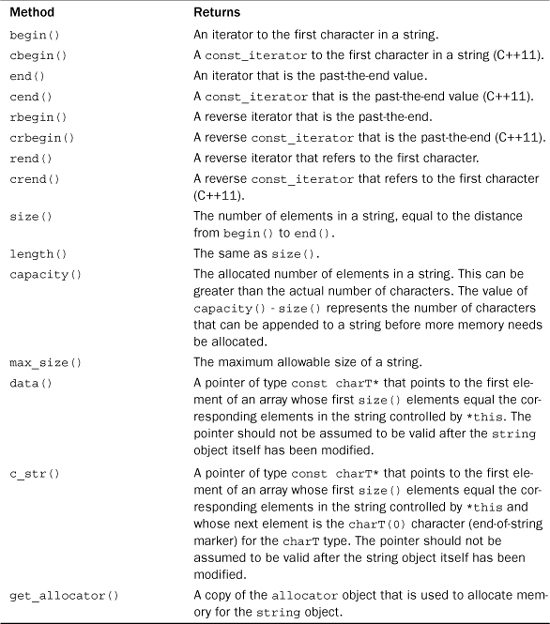
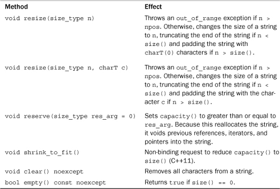

string Template ClassMuch of this appendix is a bit technical. However, if you just want to know the capabilities of the string template class, you can concentrate on the descriptions of the various string methods.
The string class is based on a template definition:
template<class charT, class traits = char_traits<charT>,
class Allocator = allocator<charT> >
class basic_string {...};
Here charT represents the type stored in the string. The traits parameter represents a class that defines necessary properties that a type must possess to be represented as a string. For example, it should have a length() method that returns the length of a string, represented as an array of type charT. The end of such an array is indicated by the value charT(0), the generalization of the null character. (The expression charT(0) is a type cast of 0 to type charT. It could be just 0, as it is for type char, or more generally, it could be an object created by a charT constructor.) The class also includes methods for comparing values, and so on. The Allocator parameter represents a class to handle memory allocation for the string. The default allocator<charT> template uses new and delete in the standard ways.
There are four predefined specializations:
typedef basic_string<char> string;
typedef basic_string<char16_t> u16string;
typedef basic_string<char32_t> u32string;
typedef basic_string<wchar_t> wstring;
These specializations, in turn, use the following specializations:
char_traits<char>
allocator<char>
char_traits<char16_t>
allocator<char_16>
char_traits<char_32>
allocator<char_32>
char_traits<wchar_t>
allocator<wchar_t>
You can create a string class for some type other than char or wchar_t by defining a traits class and using the basic_string template.
The basic_string template defines several types that are used later in defining the methods:
typedef traits traits_type;
typedef typename traits::char_type value_type;
typedef Allocator allocator_type;
typedef typename Allocator::size_type size_type;
typedef typename Allocator::difference_type difference_type;
typedef typename Allocator::reference reference;
typedef typename Allocator::const_reference const_reference;
typedef typename Allocator::pointer pointer;
typedef typename Allocator::const_pointer const_pointer;
Note that traits is a template parameter that corresponds to some specific type, such as char_traits<char>; traits_type becomes a typedef for that specific type. The following notation means that char_type is a type name defined in the class represented by traits:
typedef typename traits::char_type value_type;
The keyword typename is used to tell the compiler that the expression traits::char_type is a type. For the string specialization, for example, value_type is char.
size_type is used like size_of, except that it returns the size of a string in terms of the stored type. For the string specialization, that would be in terms of char, in which case size_type is the same as size_of. It is an unsigned type.
difference_type is used to measure the distance between two elements of a string, again in units corresponding to the size of a single element. Typically, it would be a signed version of the type underlying size_type.
For the char specialization, pointer is type char *, and reference is type char &. However, if you create a specialization for a type of your own design, these types (pointer and reference) could refer to classes that have the same properties as the more basic pointers and references.
To allow Standard Template Library (STL) algorithms to be used with strings, the template defines some iterator types:
typedef (models random access iterator) iterator;
typedef (models random access iterator) const_iterator;
typedef std::reverse_iterator<iterator> reverse_iterator;
typedef std::reverse_iterator<const_iterator> const_reverse_iterator;
The template defines a static constant:
static const size_type npos = -1;
Because size_type is unsigned, assigning the value -1 actually amounts to assigning the largest possible unsigned value to npos. This value corresponds to one greater than the largest possible array index.
Constructors can be described in terms of the effects they have. Because the private portions of a class can be implementation dependent, these effects should be described in terms of information available as part of the public interface. Table F.1 lists several methods whose return values can be used to describe the effects of constructors and of other methods. Note that much of the terminology is from the STL.
Table F.1. Some string Data Methods

Be careful of the differences among begin(), rend(), data(), and c_str(). All relate to the first character in a string, but in different ways. The begin() and rend() methods return iterators, which are generalizations of pointers, as described in Chapter 16, “The string Class and the Standard Template Library.” In particular, begin() returns a model of a forward iterator, and rend() returns a copy of a reverse iterator. Both refer to the actual string managed by the string object. (Because the string class uses dynamic memory allocation, the actual string contents need not be inside the object, so we use the term manage to describe the relationship between object and string.) You can use the methods that return iterators with the iterator-based algorithms of the STL. For example, you can use the STL reverse() function to reverse the contents of a string:
string word;
cin >> word;
reverse(word.begin(), word.end());
The data() and c_str() methods, on the other hand, do return ordinary pointers. Furthermore, the returned pointers point to the first element of an array that holds the string characters. This array can but need not be a copy of the original string managed by the string object. (The internal representation used by the string object can be an array, but it doesn’t have to be.) Because it is possible that the returned pointers point to the original data, they are const, so they can’t be used to alter the data. Also the pointers are not guaranteed to be valid after the string is modified; this reflects that they may point to the original data. The difference between data() and c_str() is that the array c_str() points to is terminated with a null character (or equivalent), whereas data() just guarantees that the actual string characters are present. Thus, the c_str() method can be used, for example, as an argument to a function that expects to receive a C-style string:
string file("tofu.man");
ofstream outFile(file.c_str());
Similarly, data() and size() could be used with a function that expects to receive a pointer to an array element and a value that represents the number of elements to process:
string vampire("Do not stake me, oh my darling!");
int vlad = byte_check(vampire.data(), vampire.size());
A C++ implementation could choose to represent a string object’s string as a dynamically allocated C-style string and to implement the forward iterator as a char * pointer. In that case, the implementation could choose to have begin(), data(), and c_str() all return the same pointer. But it could just as legitimately (if not as easily) return references to three different data objects.
C++11 has 11 constructors for the basic_string template class, up from the six of C++98, and one destructor:
explicit basic_string(const Allocator& a = Allocator());
basic_string(const charT* s, const Allocator& a = Allocator());
basic_string(const charT* s, size_type n, const Allocator& a = Allocator());
basic_string(const basic_string& str);
basic_string(const basic_string& str, const Allocator&);
basic_string(const basic_string& str, size_type pos,
size_type n = npos, const Allocator& a = Allocator());
basic_string(basic_string&& str) noexcept;
basic_string(const basic_string&& str, const Allocator&);
basic_string(size_type n, charT c, const Allocator& a = Allocator());
template<class InputIterator>
basic_string(InputIterator begin, InputIterator end,
const Allocator& a = Allocator());
basic_string(initializer_list<charT>, const Allocator& = Allocator());
~basic_string();
Some of the increase in constructors comes from handling arguments differently. For example, C++98 had this copy constructor:
basic_string(const basic_string& str, size_type pos = 0,
size_type n = npos, const Allocator& a = Allocator());
C++11 replaces it with three constructors—the second, third, and fourth items in the preceding list. This allows the most common uses of the C++98 version to be coded more efficiently. The really new additions are the move constructors (those with rvalue references, as discussed in Chapter 18, “Visiting with the New C++ Standard”) and the constructor with the initializer_list parameter.
Note that most of the constructors have an argument of the following form:
const Allocator& a = Allocator()
Recall that the term Allocator is the template parameter name for an allocator class to manage memory. The term Allocator() is the default constructor for that class. Thus, the constructors, by default, use the default version of the allocator object, but they give you the option of using some other version of the allocator object. The following sections examine the constructors individually.
This is the prototype for the default constructor:
explicit basic_string(const Allocator& a = Allocator());
Typically, you would accept the default argument for the allocator class and would use the constructor to create empty strings:
string bean;
wstring theory;
The following relationships hold after the default constructor is called:
• The data() method returns a non-null pointer to which 0 can be added.
• The size() method returns 0.
• The return value for capacity() is not specified.
Suppose you assign the value returned by data() to the pointer str. In this case, the first condition means str + 0 is valid.
Constructors that use C-style strings let you initialize a string object from a C-style string; more generally, they let you initialize a charT specialization from an array of charT values:
basic_string(const charT* s, const Allocator& a = Allocator());
To determine how many characters to copy, the constructor applies the traits::length() method to the array pointed to by s. (The pointer s should not be a null pointer.) For example, the following statement initializes the toast object, using the indicated character string:
string toast("Here's looking at you, kid.");
The traits::length() method for type char uses the null character to determine how many characters to copy.
The following relationships hold after the constructor is called:
• The data() method returns a pointer to the first element of a copy of the array s.
• The size() method returns a value equal to traits::length().
• The capacity() method returns a value at least as large as size().
Constructors that use part of a C-style string let you initialize a string object from part of a C-style string; more generally, they let you initialize a charT specialization from part of an array of charT values:
basic_string(const charT* s, size_type n, const Allocator& a = Allocator());
This constructor copies to the constructed object a total of n characters from the array pointed to by s. Note that it doesn’t stop copying if s has fewer characters than n. If n exceeds the length of s, the constructor interprets the contents of memory following the string as if they held data of type charT.
This constructor requires that s is not a null pointer and that n < npos. (Recall that npos is a static class constant equal to the maximum possible number of elements in a string.) If n equals npos, the constructor throws an out_of_range exception. (Because n is of type size_type and npos is the maximum size_type value, n cannot be greater than npos.) Otherwise, the following relationships hold after the constructor is called:
• The data() method returns a pointer to the first element of a copy of the array s.
• The size() method returns n.
• The capacity() method returns a value at least as large as size().
The copy constructor looks like this:
basic_string(const basic_string& str);
It initializes a new string object using a string argument:
string mel("I'm ok!");
string ida(mel);
Here, ida would get a copy of the string managed by mel.
The next constructor additionally requires that you specify an allocator:
basic_string(const basic_string& str, const Allocator&);
The following relationships hold after either of these two constructors is called:
• The data() method returns a pointer to an allocated copy of the array whose first element is pointed to by str.data().
• The size() method returns the value of str.size().
• The capacity() method returns a value at least as large as size().
Moving along, the next constructor lets you set several items:
basic_string(const basic_string& str, size_type pos, size_type n = npos,
const Allocator& a = Allocator());
The second argument pos specifies a location in the source string from which to begin the copying:
string att("Telephone home.");
string et(att, 4);
Position numbers begin with 0, so position 4 is the p character. Thus, et is initialized to "phone home.".
The optional third argument n specifies the maximum number of characters to copy. Thus, this initializes pt to the string "phone":
string att("Telephone home.");
string pt(att, 4, 5);
However, this constructor does not go past the end of the source string; for example, the following stops after copying the period:
string pt(att, 4, 200)
Thus, the constructor actually copies a number of characters equal to the lesser of n and str.size() - pos.
This constructor requires that pos <= str.size()—that is, that the initial position copied to is inside the source string; if this is not the case, the constructor throws an out_of_range exception. Otherwise, if copy_len represents the lesser of n and str.size() - pos, the following relationships hold after the constructor is called:
• The data() method returns a pointer to a copy of copy_len elements copied from the string str, starting with position pos in str.
• The size() method returns copy_len.
• The capacity() method returns a value at least as large as size().
C++11 adds move semantics to the string class. As described in Chapter 18, this involves adding a move constructor, which uses an rvalue reference instead of an lvalue reference:
basic_string(basic_string&& str) noexcept;
This constructor is invoked when the actual argument is a temporary object:
string one("din"); // C-style string constructor
string two(one); // copy constructor – one is an lvalue
string three(one+two); // move constructor, sum is an rvalue
As discussed in Chapter 18, the intent is that string three takes ownership of the object constructed by operator+() rather than copying the object and then letting the original be destroyed.
The second rvalue constructor additionally allows you to specify an allocator:
basic_string(const basic_string&& str, const Allocator&);
The following relationships hold after either of these two constructors is called:
• The data() method returns a pointer to an allocated copy of the array whose first element is pointed to by str.data().
• The size() method returns the value of str.size().
• The capacity() method returns a value at least as large as size().
n Copies of a CharacterA constructor that uses n copies of a character creates a string object that consists of n consecutive characters, all having the value c:
basic_string(size_type n, charT c, const Allocator& a = Allocator());
This constructor requires that n < npos. If n equals npos, the constructor throws an out_of_range exception. Otherwise, the following relationships hold after the constructor is called:
• The data() method returns a pointer to the first element of a string of n elements, each set to c.
• The size() method returns n.
• The capacity() method returns a value at least as large as size().
A constructor that uses a range uses an iterator-defined range in the style of the STL:
template<class InputIterator>
basic_string(InputIterator begin, InputIterator end,
const Allocator& a = Allocator());
The begin iterator points to the element in the source at which copying begins, and end points to one past the last location to be copied.
You can use this form with arrays, strings, or STL containers:
char cole[40] = "Old King Cole was a merry old soul.";
string title(cole + 4, cole + 8);
vector<char> input;
char ch;
while (cin.get(ch) && ch != '\n')
input.push_back(ch);
string str_input(input.begin(), input.end());
In the first use, InputIterator is evaluated to type const char *. In the second use, InputIterator is evaluated to type vector<char>::iterator.
The following relationships hold after the constructor is called:
• The data() method returns a pointer to the first element of a string formed by copying elements from the range [begin, end).
• The size() method returns the distance between begin and end. (The distance is measured in units equal to the size of data type obtained when the iterator is dereferenced.)
• The capacity() method returns a value at least as large as size().
This constructor takes an initializer_list<charT> parameter:
basic_string(initializer_list<charT> il, const Allocator& a = Allocator());
You can use it with a braced list of characters:
string slow({'s', 'n', 'a', 'i', 'l'});
This isn’t the most convenient way to initialize a string, but it keeps the string interface similar to that of the STL container classes.
The initializer_list class has begin() and end() members, and the effect of using this constructor is the same using the range constructor:
basic_string(il.begin(), il.end(), a);
Several methods deal with memory—for example, clearing memory contents, resizing a string, or adjusting the capacity of a string. Table F.2 lists some memory-related methods.
Table F.2. Some Memory-Related Methods

There are four methods for accessing individual characters, two of which use the [] operator and two of which use the at() method:
reference operator[](size_type pos);
const_reference operator[](size_type pos) const;
reference at(size_type n);
const_reference at(size_type n) const;
The first operator[]() method allows you to access an individual element of a string by using array notation; it can be used to retrieve or alter the value. The second operator[]() method can be used with const objects, and it can be used only to retrieve the value:
string word("tack");
cout << word[0]; // display the t
word[3] = 't'; // overwrite the k with a t
const ward("garlic");
cout << ward[2]; // display the r
The at() methods provide similar access, except that the index is provided in function argument notation:
string word("tack");
cout << word.at(0); // display the t
The difference (besides the syntax difference) is that the at() methods provide bounds checking and throw an out_of_range exception if pos >= size(). Note that pos is type size_type, which is unsigned; therefore, a negative value is impossible for pos. The operator[]() methods don’t do bounds checking, so the behavior is undefined if pos >= size(), except that the const version returns the null character equivalent if pos == size().
Thus, you get a choice between safety (using at() and testing for exceptions) and execution speed (using array notation).
There is also a function that returns a new string that is a substring of the original:
basic_string substr(size_type pos = 0, size_type n = npos) const;
It returns a string that’s a copy of the string starting at position pos and going for n characters or to the end of the string, whichever comes first. For example, the following initializes pet to "donkey":
string message("Maybe the donkey will learn to sing.");
string pet(message.substr(10, 6));
C++11 adds these four access methods:
const charT& front() const;
charT& front();
const charT& back() const;
charT& back();
The front() methods access the first element of a string, acting like operator[](0). The back() methods access the last element of a string, acting like operator[](size() - 1).
C++11 has five overloaded assignment methods, up two from C++98:
basic_string& operator=(const basic_string& str);
basic_string& operator=(const charT* s);
basic_string& operator=(charT c);
basic_string& operator=(basic_string&& str) noexcept; // C++11
basic_string& operator=(initializer_list<charT>); // C++11
The first assigns one string object to another, the second assigns a C-style string to a string object, the third assigns a single character to a string object, the fourth uses move semantics to assign an rvalue string object to a string object, and the fifth allows assignment of an initializer list. Thus, all the following operations are possible:
string name("George Wash");
string pres, veep, source, join, awkward;
pres = name;
veep = "Road Runner";
source = 'X';
join = name + source; // now with move semantics!
awkward = {'C','l','o','u','s','e','a','u'};
The string class provides six search functions, each with four prototypes. The following sections describe them briefly.
find() FamilyHere are the find() prototypes as provided by C++11:
size_type find (const basic_string& str, size_type pos = 0) const noexcept;
size_type find (const charT* s, size_type pos = 0) const;
size_type find (const charT* s, size_type pos, size_type n) const;
size_type find (charT c, size_type pos = 0) const noexcept;
The first member returns the beginning position of the str substring’s first occurrence in the invoking object, with the search beginning at position pos. If the substring is not found, the method returns npos.
Here’s code for finding the location of the substring "hat" in a longer string:
string longer("That is a funny hat.");
string shorter("hat");
size_type loc1 = longer.find(shorter); // sets loc1 to 1
size_type loc2 = longer.find(shorter, loc1 + 1); // sets loc2 to 16
Because the second search begins at position 2 (the a in That), the first occurrence of hat it finds is near the end of the string. To test for failure, you use the string::npos value:
if (loc1 == string::npos)
cout << "Not found\n";
The second method does the same thing, except that it uses an array of characters instead of a string object as the substring:
size_type loc3 = longer.find("is"); //sets loc3 to 5
The third method does the same as the second, except that it uses only the first n characters of the string s. The effect is the same as using the basic_string(const charT* s, size_type n) constructor and using the resulting object as the string argument to the first form of find(). For example, the following searches for the substring "fun":
size_type loc4 = longer.find("funds", 3); //sets loc4 to 10
The fourth method does the same thing as the first, except that it uses a single character instead of a string object as the substring:
size_type loc5 = longer.find('a'); //sets loc5 to 2
rfind() FamilyThe rfind() methods have these prototypes:
size_type rfind(const basic_string& str,
size_type pos = npos) const noexcept;
size_type rfind(const charT* s, size_type pos = npos) const;
size_type rfind(const charT* s, size_type pos, size_type n) const;
size_type rfind(charT c, size_type pos = npos) const noexcept;
These methods work like the analogous find() methods, except that they find the last occurrence of a string or character that starts at or before position pos. If the substring is not found, the method returns npos.
Here’s code for finding the location of the substring "hat" in a longer string, starting at the end of the longer string:
string longer("That is a funny hat.");
string shorter("hat");
size_type loc1 = longer.rfind(shorter); // sets loc1 to 16
size_type loc2 = longer.rfind(shorter, loc1 - 1); // sets loc2 to 1
find_first_of() FamilyThe find_first_of() methods have these prototypes:
size_type find_first_of(const basic_string& str,
size_type pos = 0) const noexcept;
size_type find_first_of(const charT* s, size_type pos, size_type n) const;
size_type find_first_of(const charT* s, size_type pos = 0) const;
size_type find_first_of(charT c, size_type pos = 0) const noexcept;
These methods work like the corresponding find() methods, except that instead of looking for a match of the entire substring, they look for the first match for any single character in the substring:
string longer("That is a funny hat.");
string shorter("fluke");
size_type loc1 = longer.find_first_of(shorter); // sets loc1 to 10
size_type loc2 = longer.find_first_of("fat"); // sets loc2 to 2
The first occurrence of any of the five characters of fluke in longer is the f in funny. The first occurrence of any of three characters of fat in longer is the a in That.
find_last_of() FamilyThe find_last_of() methods have these prototypes:
size_type find_last_of (const basic_string& str,
size_type pos = npos) const noexcept;
size_type find_last_of (const charT* s, size_type pos, size_type n) const;
size_type find_last_of (const charT* s, size_type pos = npos) const;
size_type find_last_of (charT c, size_type pos = npos) const noexcept;
These methods work like the corresponding rfind() methods, except that instead of looking for a match of the entire substring, they look for the last match for any single character in the substring.
Here’s code for finding the location of the last and next to last occurrences of any of the letters in "fluke" in a longer string:
string longer("That is a funny hat.");
string shorter("hat");
size_type loc1 = longer.find_last_of(shorter); // sets loc1 to 18
size_type loc2 = longer.find_last_of("any"); // sets loc2 to 17
The last occurrence of any of the three letters of hat in longer is the t in hat. The last occurrence of any of the three characters of any in longer is the a in hat.
find_first_not_of() FamilyThe find_first_not_of() methods have these prototypes:
size_type find_first_not_of(const basic_string& str,
size_type pos = 0) const noexcept;
size_type find_first_not_of(const charT* s, size_type pos,
size_type n) const;
size_type find_first_not_of(const charT* s, size_type pos = 0) const;
size_type find_first_not_of(charT c, size_type pos = 0) const noexcept;
These methods work like the corresponding find_first_of() methods, except that they search for the first occurrence of any character not in the substring.
Here’s code for finding the location of the first two occurrences of any of the letters not in "This" in a longer string:
string longer("That is a funny hat.");
string shorter("This");
size_type loc1 = longer.find_first_not_of(shorter); // sets loc1 to 2
size_type loc2 = longer.find_first_not_of("Thatch"); // sets loc2 to 4
The a in That is the first character in longer that does not appear in This. The first space in the longer string is the first character not present in Thatch.
find_last_not_of() FamilyThe find_last_not_of() methods have these prototypes:
size_type find_last_not_of (const basic_string& str,
size_type pos = npos) const noexcept;
size_type find_last_not_of (const charT* s, size_type pos,
size_type n) const;
size_type find_last_not_of (const charT* s,
size_type pos = npos) const;
size_type find_last_not_of (charT c, size_type pos = npos) const noexcept;
These methods work like the corresponding find_last_of() methods, except that they search for the last occurrence of any character not in the substring.
Here’s code for finding the location of the last two occurrences of any of the letters not in "This" in a longer string:
string longer("That is a funny hat.");
string shorter("That.");
size_type loc1 = longer.find_last_not_of(shorter); // sets loc1 to 15
size_type loc2 = longer.find_last_not_of(shorter, 10); // sets loc2 to 10
The last space in longer is the last character in longer that does not appear in shorter. The f in the longer string is the last character not present in shorter found up through position 10.
The string class offers methods and functions for comparing two strings. First, here are the method prototypes:
int compare(const basic_string& str) const noexcept;
int compare(size_type pos1, size_type n1,
const basic_string& str) const;
int compare(size_type pos1, size_type n1,
const basic_string& str,
size_type pos2, size_type n2) const;
int compare(const charT* s) const;
int compare(size_type pos1, size_type n1, const charT* s) const;
int compare(size_type pos1, size_type n1,
const charT* s, size_type n2 ) const;
These methods use a traits::compare() method that is defined for the particular character type used for the string. The first method returns a value less than 0 if the first string precedes the second string according to the ordering supplied by traits::compare(). It returns 0 if the two strings are the same, and it returns a value greater than 0 if the first string follows the second. If two strings are identical to the end of the shorter of the two strings, the shorter string precedes the longer string.
The following examples compare strings s1 with s3 and s1 with s2:
string s1("bellflower");
string s2("bell");
string s3("cat");
int a13 = s1.compare(s3); // a13 is < 0
int a12 = s1.compare(s2); // a12 is > 0
The second method is like the first, except that it just uses n1 characters, starting from position pos1 in the first string for the comparison.
The following example compares the first four characters in s1 with s2:
string s1("bellflower");
string s2("bell");
int a2 = s1.compare(0, 4, s2); // a2 is 0
The third method is like the first, except that it just uses n1 characters, starting from position pos1 in the first string, and n2 characters, starting from position pos2 in the second string, for the comparison. For example, the following compares the out in stout to the out in about:
string st1("stout boar");
string st2("mad about ewe");
int a3 = st1.compare(2, 3, st2, 6, 3); // a3 is 0
The fourth method is like the first, except that it uses a character array instead of a string object for the second string.
The fifth and sixth methods essentially are like the third, except that they use a character array instead of a string object for the second string.
The non-member comparison functions are overloaded relational operators:
operator==()
operator<()
operator<=()
operator>()
operator>=()
operator!=()
Each operator is overloaded so that it can compare a string object to a string object, a string object to a C-style string, and a C-style string to a string object. These operators are defined in terms of the compare() method, so they provide a notationally more convenient way of making comparisons.
The string class provides several methods for modifying strings. Most come with an abundance of overloaded versions so that they can be used with string objects, string arrays, individual characters, and iterator ranges.
You can append one string to another by using the overloaded += operator or by using an append() method. All throw a length_error exception if the result would be longer than the maximum string size. The += operators let you append a string object, a string array, or an individual character to another string:
basic_string& operator+=(const basic_string& str);
basic_string& operator+=(const charT* s);
basic_string& operator+=(charT c);
The append() methods also let you append a string object, a string array, or an individual character to another string. In addition, they let you append part of a string object by specifying an initial position and a number of characters to append or else by specifying a range. You can append part of a string by specifying how many characters of the string to use. The version for appending a character lets you specify how many instances of that character to copy. Here are the prototypes for the various append() methods:
basic_string& append(const basic_string& str);
basic_string& append(const basic_string& str, size_type pos,
size_type n);
template<class InputIterator>
basic_string& append(InputIterator first, InputIterator last);
basic_string& append(const charT* s);
basic_string& append(const charT* s, size_type n);
basic_string& append(size_type n, charT c); // append n copies of c
void push_back(charT c); // appends 1 copy of c
string test("The");
test.append("ory"); // test is "Theory"
test.append(3,'!'); // test is "Theory!!!"
The operator+() function is overloaded to enable string concatenation. The overloaded functions don’t modify a string; instead, they create a new string that consists of one string appended to a second. The addition functions are not member functions, and they allow you to add a string object to a string object, a string array to a string object, a string object to a string array, a character to a string object, and a string object to a character. Here are some examples:
string st1("red");
string st2("rain");
string st3 = st1 + "uce"; // st3 is "reduce"
string st4 = 't' + st2; // st4 is "train"
string st5 = st1 + st2; // st5 is "redrain"
In addition to the basic assignment operator, the string class provides assign() methods, which allow you to assign a whole string or a part of a string or a sequence of identical characters to a string object. Here are the prototypes for the various assign() methods:
basic_string& assign(const basic_string& str);
basic string& assign(basic_string&& str) noexcept; // C++11
basic_string& assign(const basic_string& str, size_type pos,
size_type n);
basic_string& assign(const charT* s, size_type n);
basic_string& assign(const charT* s);
basic_string& assign(size_type n, charT c); // assign n copies of c
template<class InputIterator>
basic_string& assign(InputIterator first, InputIterator last);
basic_string& assign(initializer_list<charT>); // C++11
Here are a couple examples:
string test;
string stuff("set tubs clones ducks");
test.assign(stuff, 1, 5); // test is "et tu"
test.assign(6, '#"); // test is "######"
The assign() method with an rvalue reference (added by C++11) allows for move semantics, and the second new assign() method allows one to assign an initializer_list to a string object.
The insert() methods let you insert a string object, a string array, a character, or several characters into a string object. The methods are similar to the append() methods, except that they take an additional argument, indicating where to insert the new material. This argument may be a position or an iterator. The material is inserted before the insertion point. Several of the methods return a reference to the resulting string. If pos1 is beyond the end of the target string or if pos2 is beyond the end of the string to be inserted, a method throws an out_of_range exception. If the resulting string will be larger than the maximum size, a method throws a length_error exception. Here are the prototypes for the various insert() methods:
basic_string& insert(size_type pos1, const basic_string& str);
basic_string& insert(size_type pos1, const basic_string& str,
size_type pos2, size_type n);
basic_string& insert(size_type pos, const charT* s, size_type n);
basic_string& insert(size_type pos, const charT* s);
basic_string& insert(size_type pos, size_type n, charT c);
iterator insert(const_iterator p, charT c);
iterator insert(const_iterator p, size_type n, charT c);
template<class InputIterator>
void insert(iterator p, InputIterator first, InputIterator last);
iterator insert(const_iterator p, initializer_list<charT>); // C++11
For example, the following code inserts the string "former " before the b in "The banker.":
string st3("The banker.");
st3.insert(4, "former ");
Then the following code inserts the string " waltzed" (not including the !, which would be the ninth character) just before the period at the end of "The former banker.":
st3.insert(st3.size() - 1, " waltzed!", 8);
The erase() methods remove characters from a string. Here are their prototypes:
basic_string& erase(size_type pos = 0, size_type n = npos);
iterator erase(const_iterator position);
iterator erase(const_iterator first, iterator last);
void pop_back();
The first form removes the character from position pos to n characters later or the end of the string, whichever comes first. The second removes the single character referenced by the iterator position and returns an iterator to the next element or if there are no more elements, returns end(). The third removes the characters in the range [first, last); that is, including first and up to but not including last. The method returns an iterator to the element following the last element erased. Finally, the pop_back() method removes the last character in the string.
The various replace() methods identify part of a string to be replaced and identify the replacement. The part to be replaced can be identified by an initial position and a character count or by an iterator range. The replacement can be a string object, a string array, or a particular character duplicated several times. Replacement string objects and arrays can further be modified by indicating a particular portion, using a position and a count, just a count, or an iterator range. Here are the prototypes for the various replace() methods:
basic_string& replace(size_type pos1, size_type n1, const basic_string& str);
basic_string& replace(size_type pos1, size_type n1, const basic_string& str,
size_type pos2, size_type n2);
basic_string& replace(size_type pos, size_type n1, const charT* s,
size_type n2);
basic_string& replace(size_type pos, size_type n1, const charT* s);
basic_string& replace(size_type pos, size_type n1, size_type n2, charT c);
basic_string& replace(const_iterator i1, const_iterator i2,
const basic_string& str);
basic_string& replace(const_iterator i1, const_iterator i2,
const charT* s, size_type n);
basic_string& replace(const_iterator i1, const_iterator i2,
const charT* s);
basic_string& replace(const_iterator i1, const_iterator i2,
size_type n, charT c);
template<class InputIterator>
basic_string& replace(const_iterator i1, const_iterator i2,
InputIterator j1, InputIterator j2);
basic_string& replace(const_iteraor i1, const_iteator i2,
initializer)list<charT> il);
Here is an example:
string test("Take a right turn at Main Street.");
test.replace(7,5,"left"); // replace right with left
Note that you can use find() to find the positions used in replace:
string s1 = "old";
string s2 = "mature";
string s3 = "The old man and the sea";
string::size_type pos = s3.find(s1);
if (pos != string::npos)
s3.replace(pos, s1.size(), s2);
This example would replace old with mature.
copy() and swap()The copy() method copies a string object, or part thereof, to a designated character array:
size_type copy(charT* s, size_type n, size_type pos = 0) const;
In this case, s points to the destination array, n indicates the number of characters to copy, and pos indicates the position in the string object from which copying begins. Copying proceeds for n characters or until the last character in the string object, whichever comes first. The function returns the number of characters copied. The method does not append a null character, and it is up to the programmer to see that the array is large enough to hold the copy.
The copy() method does not append a null character, nor does it check whether the destination array is large enough.
The swap() method swaps the contents of two string objects by using a constant time algorithm:
void swap(basic_string& str);
The string class overloads the << operator to display string objects. It returns a reference to the istream object so that output can be concatenated:
string claim("The string class has many features.");
cout << claim << endl;
The string class overloads the >> operator so that you can read input into a string:
string who;
cin >> who;
Input terminates on the end-of-file, on reading the maximum number of characters allowed in a string, or on reaching a white-space character. (The definition of white space depends on the character set and on the type that charT represents.)
There are two getline() functions. The first has this prototype:
template<class charT, class traits, class Allocator>
basic_istream<charT,traits>& getline(basic_istream<charT,traits>& is,
basic_string<charT,traits,Allocator>& str, charT delim);
It reads characters from the input stream is into the string str until it encounters the delim delimiter character, reaches the maximum size of the string, or encounters the end-of-file. The delim character is read (that is, removed from the input stream) but not stored. The second version lacks the third argument and uses the newline character (or its generalization) instead of delim:
string str1, str2;
getline(cin, str1); // read to end-of-line
getline(cin, str2, '.'); // read to period